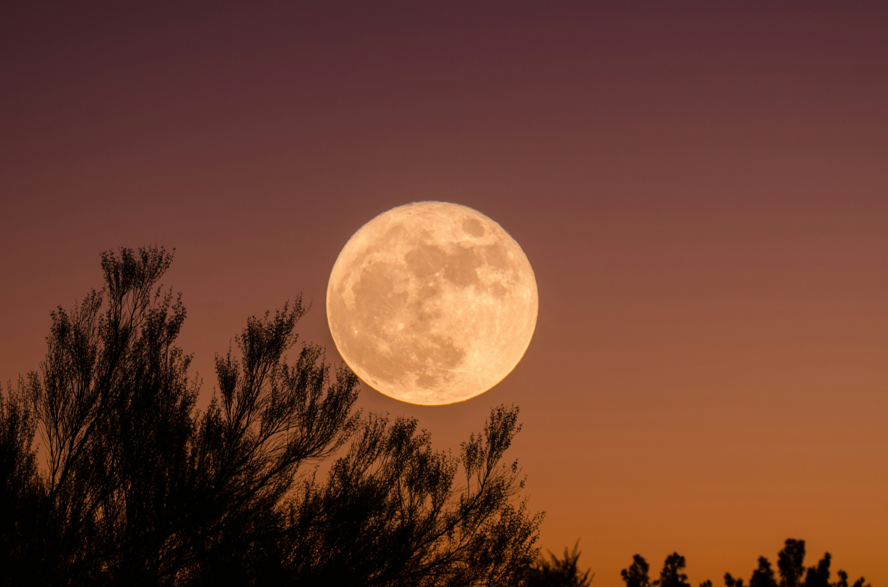
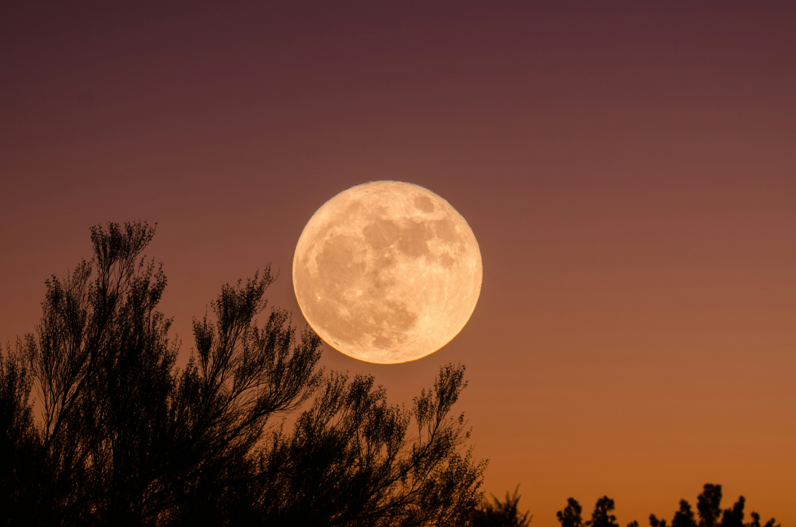

SAY IF NOT A MOON
Karen An-Hwei Lee
Gliding in circles, a moon slides in from the sea
and will exit again at high tide.
No larger than a fin, the moon scales our eucalyptus grove.
The moon sleeps in a house where shadows are no longer in love.
Moon on a woman's hand mirrors the carbon symmetries
of the charcoal she holds sketching.
Night is the new moon shorn for a letter
mailed overseas. I hear no farewell nor see nostalgia
in a lunar cloud.
The low tide where a moon circles
finned without gills
swallows a star whose own name nobody knows.
Eye without an iris
observes a faded world without judgment
waiting on God.
What I did not hear this evening or failed to see:
Not a moon humming
this pupil of light.
 
